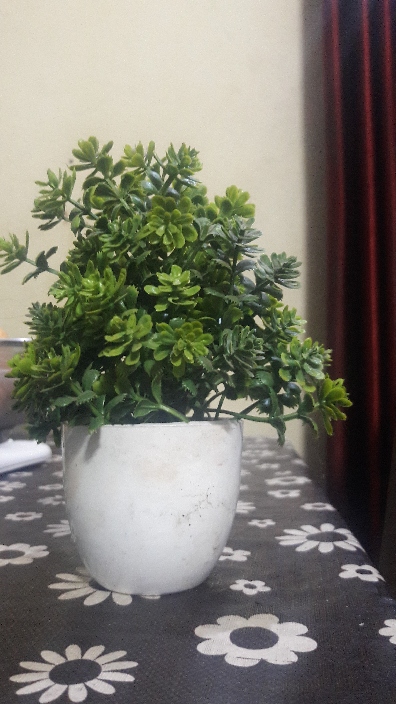

Test Image -


• Output on GOOGLE LENS -
Clock, Laughing Buddha, Rubik's Cube, Plant, Picture Frame, Calculator.
• Output on Mobilenet Model -
Working Clock, Buddha, Cube, Toy plant, Photo Frame, Calculator.
Result -
I have 6 pictures on Google Lens and Mobilenet Model.
According to the results Google Lens is more accurate than Mobilenet Model.